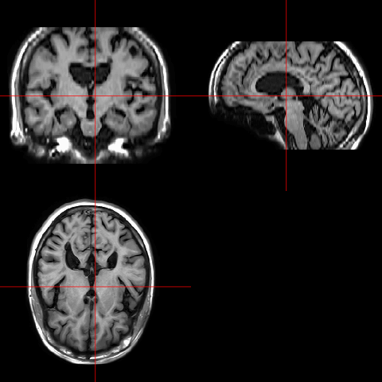

Visualizaing data using ggplot2
In this week’s tutorial, we will use the R package ggplot2 to generate high-quality graphics for data visualization. Big chunk of this tutorial is drawn from the book Modern Statistics for Modern Biology.
The package ggplot2 is developed by Hadley Wickham (Wickham 2016). It is one of the most widely used R packages for data visualization.
We’ll also use the mouse embryos data in the package Hiiragi2013. It is a gene expression microarray dataset containing the transcriptomes of around 100 individual cells from mouse embryos at different time points in the early development. The mammalian embryo starts out as a single cell, the fertilized egg. Through synchronized waves of cell divisions, the egg first multiplies itself into a cluster of cells of same type. Then later, cells choose different lineages, proliferate themselves by further and further specification, till the different cell types and tissues arise that are needed to form a full organism. More details can be found in the paper and in the documentation of the Bioconductor data package Hiiragi2013. In this tutorial, we will use plotting functions from ggplot2 to visualize the emprical distributions of gene expression and cell types, and their relationships.
Installing ggplot2
install.packages('ggplot2')
Installing Hiiragi2013
The following syntaxes will install the package Hiiragi2013 we gonna use in this section. See here for more details. Warning: it will take a while to install this package.
if (!require("BiocManager", quietly = TRUE))
install.packages("BiocManager")
BiocManager::install("Hiiragi2013")
Basic structure of ggplot2
Basic structure of ggplot2 consists of the following components.
- The dataset to be used;
- An aesthetic mapping aes (), which controls, for example, which variables map to which axes or colours;
- Add any ‘layers’ to the plot as required.
The general format of the function ggplot () from ggplot2 is
ggplot (dataset, aes ()) + layer1 + layer2 + layer3 + ...
One can save a plot as an object, and add layers to it later. For example,
myplot <- ggplot (dataset, aes ()) + layer1 + layer2
myplot + layer3 + layer4
Basic ggplot2 plots
- Loading the
Hiiragi2013data and preparation.
library("Hiiragi2013")
data("x")
dim(Biobase::exprs(x))
[1] 45101 101
library("dplyr")
groups = group_by(pData(x), sampleGroup) %>%
summarise(n = n(), color = unique(sampleColour))
groups
# A tibble: 8 × 3
sampleGroup n color
<chr> <int> <chr>
1 E3.25 36 #CAB2D6
2 E3.25 (FGF4-KO) 17 #FDBF6F
3 E3.5 (EPI) 11 #A6CEE3
4 E3.5 (FGF4-KO) 8 #FF7F00
5 E3.5 (PE) 11 #B2DF8A
6 E4.5 (EPI) 4 #1F78B4
7 E4.5 (FGF4-KO) 10 #E31A1C
8 E4.5 (PE) 4 #33A02C
Please just try out the following codes and make sure you can generate the corresponding figures for youself. It is OK you do not fully understand the details about all the options.
Barplot
ggplot(groups, aes(x = sampleGroup, y = n)) +
geom_bar(stat = "identity")
groupColor = setNames(groups$color, groups$sampleGroup)
ggplot(groups, aes(x = sampleGroup, y = n, fill = sampleGroup)) +
geom_bar(stat = "identity") +
scale_fill_manual(values = groupColor, name = "Groups") +
theme(axis.text.x = element_text(angle = 90, hjust = 1))
pb.polar = pb + coord_polar() +
theme(axis.text.x = element_text(angle = 0, hjust = 1),
axis.text.y = element_blank(),
axis.ticks = element_blank()) +
xlab("") + ylab("")
pb.polar

Scatterplot
dftx = data.frame(t(Biobase::exprs(x)), pData(x))
ggplot( dftx, aes( x = X1426642_at, y = X1418765_at )) +
geom_point( shape = 1 ) +
geom_smooth( method = "loess" )
ggplot( dftx, aes( x = X1426642_at, y = X1418765_at )) +
geom_point( aes( color = sampleColour), shape = 19 ) +
geom_smooth( method = "loess" ) +
scale_color_discrete( guide = "none" )
Boxplot
p = ggplot(genes, aes( x = gene, y = value, fill = gene))
p + geom_boxplot()
Dot plot
p = ggplot(genes, aes( x = gene, y = value, fill = gene))
p + geom_dotplot(binaxis = "y", binwidth = 1/6,
stackdir = "center", stackratio = 0.75,
aes(color = gene))
Density plot
ggplot(genes, aes( x = value, color = gene)) + geom_density()
Violin plot
p = ggplot(genes, aes( x = gene, y = value, fill = gene))
p + geom_violin()
Ridgeline plot
library("ggridges")
ggplot(genes, aes(x = value, y = gene, fill = gene)) +
geom_density_ridges()
top42 = order(rowMeans(Biobase::exprs(x)), decreasing = TRUE)[1:42]
g42 = melt(Biobase::exprs(x)[rev(top42), ], varnames = c("probe", "sample"))
ggplot(g42, aes(x = value, y = probe)) + geom_density_ridges()
ECDF(empirical cumulative distribution function) plot
ggplot(genes, aes( x = value, color = gene)) + stat_ecdf()
Scatterplot
scp = ggplot(dfx, aes(x = `59 E4.5 (PE)` ,
y = `92 E4.5 (FGF4-KO)`))
scp + geom_point()
library("RColorBrewer")
colorscale = scale_fill_gradientn(
colors = rev(brewer.pal(9, "YlGnBu")),
values = c(0, exp(seq(-5, 0, length.out = 100))))
scp + geom_hex(binwidth = c(0.2, 0.2)) + colorscale +
coord_fixed()
Heatmaps
library("pheatmap")
topGenes = order(rowVars(Biobase::exprs(x)), decreasing = TRUE)[1:500]
rowCenter = function(x) { x - rowMeans(x) }
pheatmap( rowCenter(Biobase::exprs(x)[ topGenes, ] ),
show_rownames = FALSE, show_colnames = FALSE,
breaks = seq(-5, +5, length = 101),
annotation_col =
pData(x)[, c("sampleGroup", "Embryonic.day", "ScanDate") ],
annotation_colors = list(
sampleGroup = groupColor,
genotype = c(`FGF4-KO` = "chocolate1", `WT` = "azure2"),
Embryonic.day = setNames(brewer.pal(9, "Blues")[c(3, 6, 9)],
c("E3.25", "E3.5", "E4.5")),
ScanDate = setNames(brewer.pal(nlevels(x$ScanDate), "YlGn"),
levels(x$ScanDate))
),
cutree_rows = 4
)
Plotting neuroimages
We have used the package neurobase to plot out a neuroimages in Week 4’s lecture: “Import, Export and Manage Data.” Just to refresh on it.
> library(neurobase)
> t1 = neurobase::readnii("./data/training01_01_t1.nii.gz")
> dim(t1)
[1] 408 512 152
Please notice that the neuroimaging data is read into R as a 3-dimensional array.
> ortho2(robust_window(t1, probs = c(0, 0.975)))
